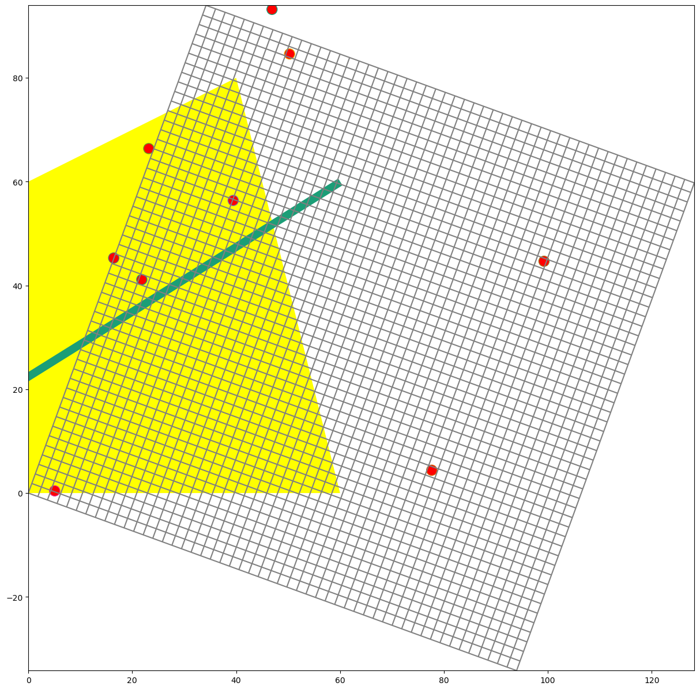
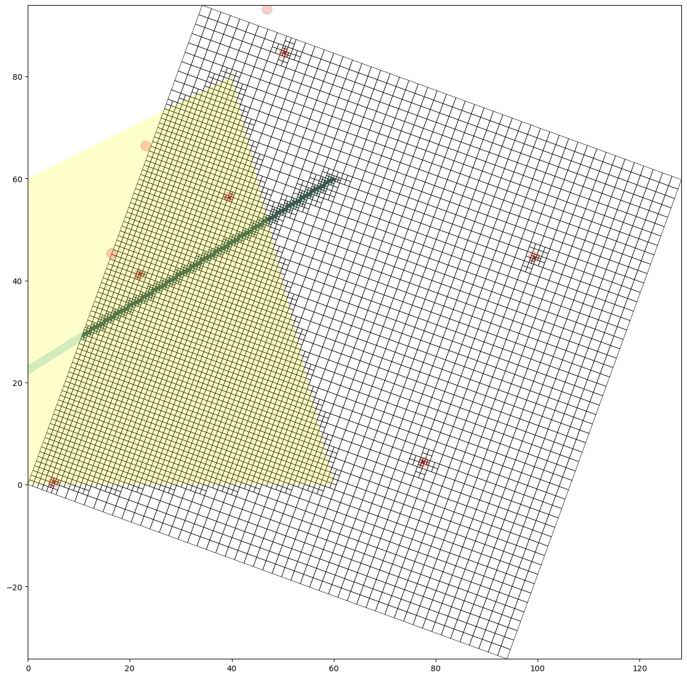
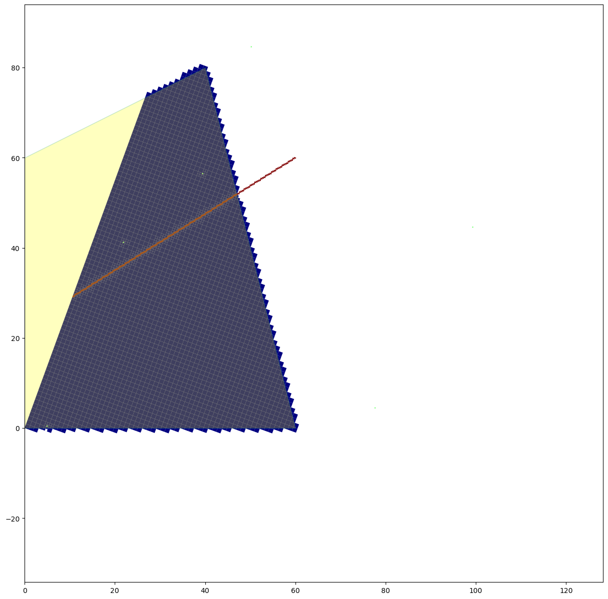
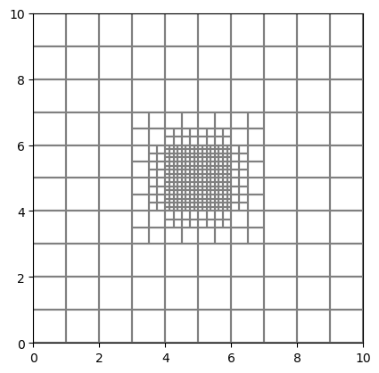
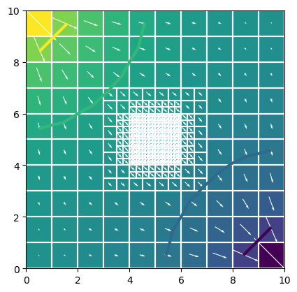
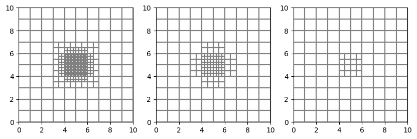
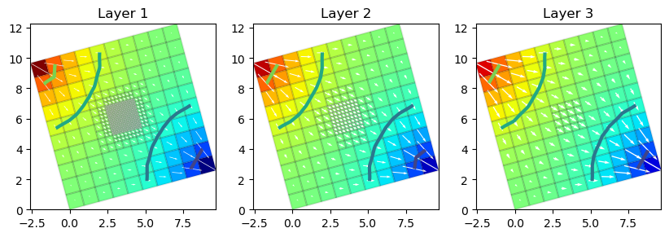

Note
Creating Layered Quadtree Grids with GRIDGEN
FloPy has a module that can be used to drive the GRIDGEN program. This notebook shows how it works.
Import Modules and Locate Gridgen Executable
[1]:
import os
import sys
import shutil
from tempfile import TemporaryDirectory
import numpy as np
import matplotlib as mpl
import matplotlib.pyplot as plt
# run installed version of flopy or add local path
try:
import flopy
except:
fpth = os.path.abspath(os.path.join("..", ".."))
sys.path.append(fpth)
import flopy
from flopy.utils.gridgen import Gridgen
from flopy.utils import flopy_io
print(sys.version)
print("numpy version: {}".format(np.__version__))
print("matplotlib version: {}".format(mpl.__version__))
print("flopy version: {}".format(flopy.__version__))
3.10.10 | packaged by conda-forge | (main, Mar 24 2023, 20:08:06) [GCC 11.3.0]
numpy version: 1.24.3
matplotlib version: 3.7.1
flopy version: 3.3.7
The Flopy GRIDGEN module requires that the gridgen executable can be called using subprocess (i.e., gridgen is in your path).
[2]:
gridgen_exe = flopy.which("gridgen")
if gridgen_exe is None:
msg = (
"Warning, gridgen is not in your path. "
"When you create the griden object you will need to "
"provide a full path to the gridgen binary executable."
)
print(msg)
else:
print(
"gridgen executable was found at: {}".format(
flopy_io.relpath_safe(gridgen_exe)
)
)
gridgen executable was found at: ../../../../../.local/bin/modflow/gridgen
[3]:
# temporary directory
temp_dir = TemporaryDirectory()
model_ws = temp_dir.name
gridgen_ws = os.path.join(model_ws, "gridgen")
if not os.path.exists(gridgen_ws):
os.makedirs(gridgen_ws, exist_ok=True)
print("Model workspace is : {}".format(flopy_io.scrub_login(model_ws)))
print("Gridgen workspace is : {}".format(flopy_io.scrub_login(gridgen_ws)))
Model workspace is : /tmp/tmp3kbfi9o9
Gridgen workspace is : /tmp/tmp3kbfi9o9/gridgen
Basic Gridgen Operations
Setup Base MODFLOW Grid
GRIDGEN works off of a base MODFLOW grid. The following information defines the basegrid.
[4]:
Lx = 100.0
Ly = 100.0
nlay = 2
nrow = 51
ncol = 51
delr = Lx / ncol
delc = Ly / nrow
h0 = 10
h1 = 5
top = h0
botm = np.zeros((nlay, nrow, ncol), dtype=np.float32)
botm[1, :, :] = -10.0
[5]:
ms = flopy.modflow.Modflow(rotation=-20.0)
dis = flopy.modflow.ModflowDis(
ms,
nlay=nlay,
nrow=nrow,
ncol=ncol,
delr=delr,
delc=delc,
top=top,
botm=botm,
)
Create the Gridgen Object
[6]:
g = Gridgen(ms.modelgrid, model_ws=gridgen_ws)
Add an Optional Active Domain
Cells outside of the active domain will be clipped and not numbered as part of the final grid. If this step is not performed, then all cells will be included in the final grid.
[7]:
# setup the active domain
adshp = os.path.join(gridgen_ws, "ad0")
adpoly = [[[(0, 0), (0, 60), (40, 80), (60, 0), (0, 0)]]]
# g.add_active_domain(adpoly, range(nlay))
Refine the Grid
[8]:
x = Lx * np.random.random(10)
y = Ly * np.random.random(10)
wells = list(zip(x, y))
g.add_refinement_features(wells, "point", 3, range(nlay))
rf0shp = os.path.join(gridgen_ws, "rf0")
[9]:
river = [[(-20, 10), (60, 60)]]
g.add_refinement_features(river, "line", 3, range(nlay))
rf1shp = os.path.join(gridgen_ws, "rf1")
[10]:
g.add_refinement_features(adpoly, "polygon", 1, range(nlay))
rf2shp = os.path.join(gridgen_ws, "rf2")
Plot the Gridgen Input
[11]:
fig = plt.figure(figsize=(15, 15))
ax = fig.add_subplot(1, 1, 1, aspect="equal")
mm = flopy.plot.PlotMapView(model=ms)
mm.plot_grid()
flopy.plot.plot_shapefile(rf2shp, ax=ax, facecolor="yellow", edgecolor="none")
flopy.plot.plot_shapefile(rf1shp, ax=ax, linewidth=10)
flopy.plot.plot_shapefile(rf0shp, ax=ax, facecolor="red", radius=1)
[11]:
<matplotlib.collections.PatchCollection at 0x7f72b5dc9420>

Build the Grid
[12]:
g.build(verbose=False)
Plot the Grid
[13]:
fig = plt.figure(figsize=(15, 15))
ax = fig.add_subplot(1, 1, 1, aspect="equal")
g.plot(ax, linewidth=0.5)
flopy.plot.plot_shapefile(
rf2shp, ax=ax, facecolor="yellow", edgecolor="none", alpha=0.2
)
flopy.plot.plot_shapefile(rf1shp, ax=ax, linewidth=10, alpha=0.2)
flopy.plot.plot_shapefile(rf0shp, ax=ax, facecolor="red", radius=1, alpha=0.2)
[13]:
<matplotlib.collections.PatchCollection at 0x7f72a37a18d0>

Create a Flopy ModflowDisu Object
[14]:
mu = flopy.mfusg.MfUsg(model_ws=gridgen_ws, modelname="mfusg")
disu = g.get_disu(mu)
disu.write_file()
# print(disu)
Intersect Features with the Grid
[15]:
adpoly_intersect = g.intersect(adpoly, "polygon", 0)
print(adpoly_intersect.dtype.names)
print(adpoly_intersect)
print(adpoly_intersect.nodenumber)
('nodenumber', 'polyid', 'totalarea', 'SHAPEID')
[( 349, 0, 0.961169 , 0) ( 409, 0, 0.961169 , 0)
( 352, 0, 0.961169 , 0) ... (5957, 0, 0.215195 , 0)
(5958, 0, 0.130306 , 0) (5959, 0, 0.00257014, 0)]
[ 349 409 352 ... 5957 5958 5959]
[16]:
well_intersect = g.intersect(wells, "point", 0)
print(well_intersect.dtype.names)
print(well_intersect)
print(well_intersect.nodenumber)
('nodenumber', 'pointid', 'SHAPEID')
[(2924, 1, 1) (4315, 2, 2) (1536, 3, 3) (5886, 4, 4) ( 74, 7, 7)
( 919, 8, 8)]
[2924 4315 1536 5886 74 919]
[17]:
river_intersect = g.intersect(river, "line", 0)
print(river_intersect.dtype.names)
# print(river_intersect)
# print(river_intersect.nodenumber)
('nodenumber', 'arcid', 'length', 'starting_distance', 'ending_distance', 'SHAPEID')
Plot Intersected Features
[18]:
a = np.zeros((g.nodes), dtype=int)
a[adpoly_intersect.nodenumber] = 1
a[well_intersect.nodenumber] = 2
a[river_intersect.nodenumber] = 3
fig = plt.figure(figsize=(15, 15))
ax = fig.add_subplot(1, 1, 1, aspect="equal")
g.plot(ax, a=a, masked_values=[0], edgecolor="none", cmap="jet")
flopy.plot.plot_shapefile(rf2shp, ax=ax, facecolor="yellow", alpha=0.25)
[18]:
<matplotlib.collections.PatchCollection at 0x7f72a83886d0>

Use Gridgen to Build MODFLOW 6 DISV Model
In this section, we will reproduce the MODFLOW 6 Quick Start example that is shown on the main page of the flopy repository (https://github.com/modflowpy/flopy).
A main idea for DISV in MODFLOW 6 is that each layer much have the same spatial grid. Gridgen allows the creation of a grid that has a different number of cells within each layer. This type of grid cannot be used with the DISV Package. To make sure that the resulting grid is the same for each layer, refinement should be added to all layers when using the flopy Gridgen wrapper.
[19]:
from shapely.geometry import Polygon
name = "dummy"
nlay = 3
nrow = 10
ncol = 10
delr = delc = 1.0
top = 1
bot = 0
dz = (top - bot) / nlay
botm = [top - k * dz for k in range(1, nlay + 1)]
# Create a dummy model and regular grid to use as the base grid for gridgen
sim = flopy.mf6.MFSimulation(sim_name=name, sim_ws=gridgen_ws, exe_name="mf6")
gwf = flopy.mf6.ModflowGwf(sim, modelname=name)
dis = flopy.mf6.ModflowGwfdis(
gwf,
nlay=nlay,
nrow=nrow,
ncol=ncol,
delr=delr,
delc=delc,
top=top,
botm=botm,
)
# Create and build the gridgen model with a refined area in the middle
g = Gridgen(gwf.modelgrid, model_ws=gridgen_ws)
polys = [Polygon([(4, 4), (6, 4), (6, 6), (4, 6)])]
g.add_refinement_features(polys, "polygon", 3, range(nlay))
g.build()
[20]:
# Create and plot a flopy VertexGrid object
# Note that this is not necessary, because it can
# be created automatically after the disv package
# is added to the gwf model (gwf.modelgrid should exist)
gridprops_vg = g.get_gridprops_vertexgrid()
vgrid = flopy.discretization.VertexGrid(**gridprops_vg)
vgrid.plot()
[20]:
<matplotlib.collections.LineCollection at 0x7f72a3a71180>

[21]:
# retrieve a dictionary of arguments to be passed
# directly into the flopy disv constructor
disv_gridprops = g.get_gridprops_disv()
disv_gridprops.keys()
[21]:
dict_keys(['nlay', 'ncpl', 'top', 'botm', 'nvert', 'vertices', 'cell2d'])
[22]:
# find the cell numbers for constant heads
chdspd = []
ilay = 0
for x, y, head in [(0, 10, 1.0), (10, 0, 0.0)]:
ra = g.intersect([(x, y)], "point", ilay)
ic = ra["nodenumber"][0]
chdspd.append([(ilay, ic), head])
chdspd
[22]:
[[(0, 0), 1.0], [(0, 435), 0.0]]
[23]:
# build uun and post-process the MODFLOW 6 model
ws = os.path.join(model_ws, "gridgen_disv")
name = "mymodel"
sim = flopy.mf6.MFSimulation(
sim_name=name, sim_ws=ws, exe_name="mf6", verbosity_level=0
)
tdis = flopy.mf6.ModflowTdis(sim)
ims = flopy.mf6.ModflowIms(sim, linear_acceleration="bicgstab")
gwf = flopy.mf6.ModflowGwf(sim, modelname=name, save_flows=True)
disv = flopy.mf6.ModflowGwfdisv(gwf, **disv_gridprops)
ic = flopy.mf6.ModflowGwfic(gwf)
npf = flopy.mf6.ModflowGwfnpf(
gwf, xt3doptions=True, save_specific_discharge=True
)
chd = flopy.mf6.ModflowGwfchd(gwf, stress_period_data=chdspd)
budget_file = name + ".bud"
head_file = name + ".hds"
oc = flopy.mf6.ModflowGwfoc(
gwf,
budget_filerecord=budget_file,
head_filerecord=head_file,
saverecord=[("HEAD", "ALL"), ("BUDGET", "ALL")],
)
sim.write_simulation()
sim.run_simulation(silent=True)
head = gwf.output.head().get_data()
bud = gwf.output.budget()
spdis = bud.get_data(text="DATA-SPDIS")[0]
pmv = flopy.plot.PlotMapView(gwf)
pmv.plot_array(head)
pmv.plot_grid(colors="white")
pmv.contour_array(head, levels=[0.2, 0.4, 0.6, 0.8], linewidths=3.0)
pmv.plot_vector(spdis["qx"], spdis["qy"], color="white")
[23]:
<matplotlib.quiver.Quiver at 0x7f72a2b4bc70>

Use Gridgen to Build MODFLOW 6 DISU Model
In this section, we will reproduce the MODFLOW 6 Quick Start example that is shown on the main page of the flopy repository (https://github.com/modflowpy/flopy).
DISU is the most general grid form that can be used with MODFLOW 6. It does not have the requirement that each layer must use the same grid
[24]:
from shapely.geometry import Polygon
name = "dummy"
nlay = 3
nrow = 10
ncol = 10
delr = delc = 1.0
top = 1
bot = 0
dz = (top - bot) / nlay
botm = [top - k * dz for k in range(1, nlay + 1)]
# Create a dummy model and regular grid to use as the base grid for gridgen
sim = flopy.mf6.MFSimulation(sim_name=name, sim_ws=gridgen_ws, exe_name="mf6")
gwf = flopy.mf6.ModflowGwf(sim, modelname=name)
dis = flopy.mf6.ModflowGwfdis(
gwf,
nlay=nlay,
nrow=nrow,
ncol=ncol,
delr=delr,
delc=delc,
top=top,
botm=botm,
)
# Create and build the gridgen model with a refined area in the middle
g = Gridgen(gwf.modelgrid, model_ws=gridgen_ws)
polys = [Polygon([(4, 4), (6, 4), (6, 6), (4, 6)])]
g.add_refinement_features(polys, "polygon", 3, layers=[0])
g.build()
[25]:
# retrieve a dictionary of arguments to be passed
# directly into the flopy disu constructor
disu_gridprops = g.get_gridprops_disu6()
disu_gridprops.keys()
[25]:
dict_keys(['nodes', 'top', 'bot', 'area', 'iac', 'nja', 'ja', 'cl12', 'ihc', 'hwva', 'angldegx', 'nvert', 'vertices', 'cell2d'])
[26]:
# Create and plot a flopy UnstructuredGrid object
gridprops_ug = g.get_gridprops_unstructuredgrid()
ugrid = flopy.discretization.UnstructuredGrid(**gridprops_ug)
f = plt.figure(figsize=(10, 10))
for ilay in range(g.nlay):
ax = plt.subplot(1, g.nlay, ilay + 1)
ugrid.plot(layer=ilay, ax=ax)

[27]:
# find the cell numbers for constant heads
chdspd = []
for x, y, head in [(0, 10, 1.0), (10, 0, 0.0)]:
ra = g.intersect([(x, y)], "point", 0)
ic = ra["nodenumber"][0]
chdspd.append([(ic,), head])
chdspd
[27]:
[[(0,), 1.0], [(435,), 0.0]]
[28]:
# build run and post-process the MODFLOW 6 model
ws = os.path.join(model_ws, "gridgen_disu")
name = "mymodel"
sim = flopy.mf6.MFSimulation(
sim_name=name, sim_ws=ws, exe_name="mf6", verbosity_level=1
)
tdis = flopy.mf6.ModflowTdis(sim)
ims = flopy.mf6.ModflowIms(sim, linear_acceleration="bicgstab")
gwf = flopy.mf6.ModflowGwf(sim, modelname=name, save_flows=True)
disu = flopy.mf6.ModflowGwfdisu(gwf, **disu_gridprops)
ic = flopy.mf6.ModflowGwfic(gwf)
npf = flopy.mf6.ModflowGwfnpf(
gwf, xt3doptions=True, save_specific_discharge=True
)
chd = flopy.mf6.ModflowGwfchd(gwf, stress_period_data=chdspd)
budget_file = name + ".bud"
head_file = name + ".hds"
oc = flopy.mf6.ModflowGwfoc(
gwf,
budget_filerecord=budget_file,
head_filerecord=head_file,
saverecord=[("HEAD", "ALL"), ("BUDGET", "ALL")],
)
sim.write_simulation()
sim.run_simulation(silent=True)
head = gwf.output.head().get_data()
bud = gwf.output.budget()
spdis = bud.get_data(text="DATA-SPDIS")[0]
gwf.modelgrid.set_coord_info(angrot=15)
f = plt.figure(figsize=(10, 10))
vmin = head.min()
vmax = head.max()
for ilay in range(gwf.modelgrid.nlay):
ax = plt.subplot(1, g.nlay, ilay + 1)
pmv = flopy.plot.PlotMapView(gwf, layer=ilay, ax=ax)
ax.set_aspect("equal")
pmv.plot_array(head.flatten(), cmap="jet", vmin=vmin, vmax=vmax)
pmv.plot_grid(colors="k", alpha=0.1)
pmv.contour_array(
head, levels=[0.2, 0.4, 0.6, 0.8], linewidths=3.0, vmin=vmin, vmax=vmax
)
ax.set_title("Layer {}".format(ilay + 1))
pmv.plot_vector(spdis["qx"], spdis["qy"], color="white")
WARNING: Unable to resolve dimension of ('gwf6', 'disu', 'cell2d', 'cell2d', 'icvert') based on shape "ncvert".
writing simulation...
writing simulation name file...
writing simulation tdis package...
writing solution package ims_-1...
writing model mymodel...
writing model name file...
writing package disu...
writing package ic...
writing package npf...
writing package chd_0...
INFORMATION: maxbound in ('gwf6', 'chd', 'dimensions') changed to 2 based on size of stress_period_data
writing package oc...

Use Gridgen to Build MODFLOW-USG DISU Model
In this section, we will reproduce the MODFLOW 6 Quick Start example that is shown on the main page of the flopy repository (https://github.com/modflowpy/flopy).
In this last example, MODFLOW-USG will be used to simulate the problem.
[29]:
# build run and post-process the MODFLOW 6 model
ws = os.path.join(model_ws, "gridgen_mfusg")
name = "mymodel"
chdspd = []
for x, y, head in [(0, 10, 1.0), (10, 0, 0.0)]:
ra = g.intersect([(x, y)], "point", 0)
ic = ra["nodenumber"][0]
chdspd.append([ic, head, head])
gridprops = g.get_gridprops_disu5()
# create the mfusg modoel
m = flopy.mfusg.MfUsg(
modelname=name,
model_ws=ws,
version="mfusg",
exe_name="mfusg",
structured=False,
)
disu = flopy.mfusg.MfUsgDisU(m, **gridprops)
bas = flopy.modflow.ModflowBas(m)
lpf = flopy.mfusg.MfUsgLpf(m)
chd = flopy.modflow.ModflowChd(m, stress_period_data=chdspd)
sms = flopy.mfusg.MfUsgSms(m)
oc = flopy.modflow.ModflowOc(m)
m.write_input()
success, buff = m.run_model(silent=True, report=True)
if success:
for line in buff:
print(line)
else:
raise ValueError("Failed to run.")
# head is returned as a list of head arrays for each layer
head_file = os.path.join(ws, name + ".hds")
head = flopy.utils.HeadUFile(head_file).get_data()
# MODFLOW-USG does not have vertices, so we need to create
# and unstructured grid and then assign it to the model. This
# will allow plotting and other features to work properly.
gridprops_ug = g.get_gridprops_unstructuredgrid()
ugrid = flopy.discretization.UnstructuredGrid(**gridprops_ug)
m.modelgrid = ugrid
f = plt.figure(figsize=(10, 10))
vmin = 0.0
vmax = 1.0
for ilay in range(disu.nlay):
ax = plt.subplot(1, g.nlay, ilay + 1)
pmv = flopy.plot.PlotMapView(m, layer=ilay, ax=ax)
ax.set_aspect("equal")
pmv.plot_array(head[ilay], cmap="jet", vmin=vmin, vmax=vmax)
pmv.plot_grid(colors="k", alpha=0.1)
pmv.contour_array(head[ilay], levels=[0.2, 0.4, 0.6, 0.8], linewidths=3.0)
ax.set_title("Layer {}".format(ilay + 1))
MODFLOW-USG
U.S. GEOLOGICAL SURVEY MODULAR FINITE-DIFFERENCE GROUNDWATER FLOW MODEL
Version 1.5.00 02/27/2019
Using NAME file: mymodel.nam
Run start date and time (yyyy/mm/dd hh:mm:ss): 2023/05/04 16:00:41
Solving: Stress period: 1 Time step: 1 Groundwater Flow Eqn.
Run end date and time (yyyy/mm/dd hh:mm:ss): 2023/05/04 16:00:41
Elapsed run time: 0.005 Seconds
Normal termination of simulation

[30]:
try:
# ignore PermissionError on Windows
temp_dir.cleanup()
except:
pass
[ ]: